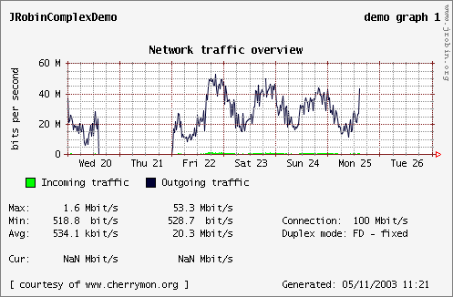
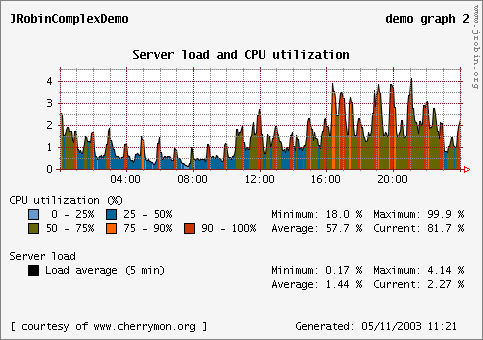
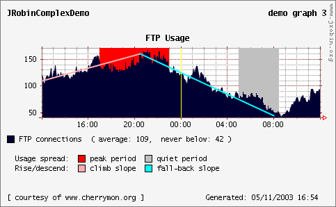

Complex demo
This demo creates 3 separate graphs and stores them under several formats in 9 files (all files will be created in the same jrobin-demo directory under your $HOME directory). Values are selected from a large RRD file that will be created by importing an XML dump (created with RRDTool) of approximately 7 MB. Graphs are created using real-life values. XML dump of the original RRD file was provided by www.cherrymon.org. See the ComplexDemo source code on how to create the graphs generated by this demo.
XML file used for this demo is not an integral part of the core JRobin distribution - it's simply too big. If you want to run the complex demo, you'll have to download the rrdtool-dump.xml file from our SourceForge site. This file is placed in a separate SourceForge package named jrobin demo data).
To run this demo, use the following command:
java -cp jrobin-demo-{version}.jar \
org.jrobin.demo.ComplexDemo path_to_rrdtool-dump.xml
or (if your X-server is not running):
java -Djava.awt.headless=true -cp jrobin-demo-{version}.jar \
org.jrobin.demo.ComplexDemo path_to_rrdtool-dump.xml
On some platforms this demo crashes due to OutOfMemoryError. In that case just increase the ammount of heap memory available to JVM from 64Mb (default) to 128Mb by specifying switch -Xmx128m on the java command line. That much heap memory could be necessary only when really big XML files are converted to JRobin RRD files (like in this example), but not for other ordinary JRobin operations (create, update, graph, fetch, dump), no matter how big RRD files are.
If everything goes well, no exceptions are thrown and your graphs should look exactlylike these ones:



Copyright © 2003, 2004 Sasa Markovic & Arne Vandamme. All Rights Reserved.